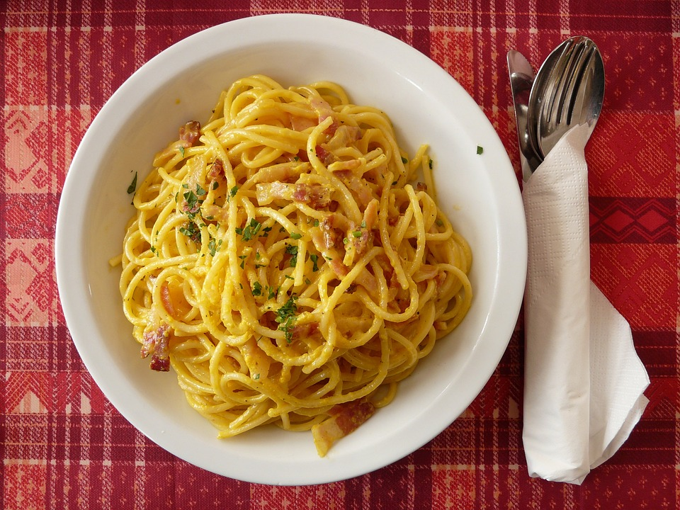

How to make carbonara

Description
This is a delicious recipe on how to make a traditional pasta carbonara.
Quick, easy and rich in flavor.
Ingredients: (4 servings)
- 500g Spaghetti
- 200g Bacon
- 2 Egg yolks
- Black pepper
- Tarragon
- Salt
- 1 dl Cream (optional)
Steps:
- Heat 2l water in a cooking pot on high heat and add a teaspoon of salt.
- Put in the pasta once the water is boiling. For al-dente, boil for 6-7 mins. Drain the water but save some for later.
- Chop the bacon into 1x1cm pieces and add to a frying pan with a small amount of oil.
- Fry the bacon on high heat until its ready. It's done right before it's too crispy.
- Separate the yolks of the eggs and put them in a small bowl.
- Use some of the pasta water together with the yolks and mix with a fork until creamy.
- (For a silkier carbonara, add the cream.)
- Pour the mix into the cooking pot with pasta. Add the bacon and stir until it becomes creamy.
- Add the seasoning and you're done. (Don't be afraid to use alot of black pepper.)
There you have it, a perfect carbonara!